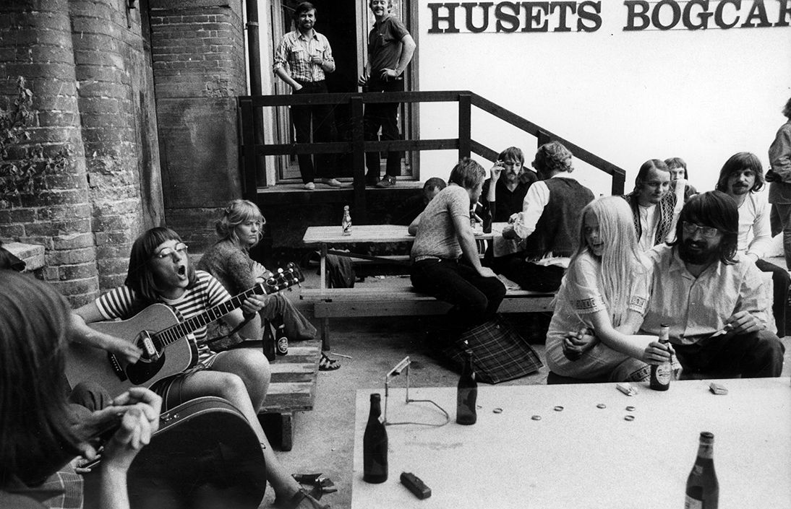
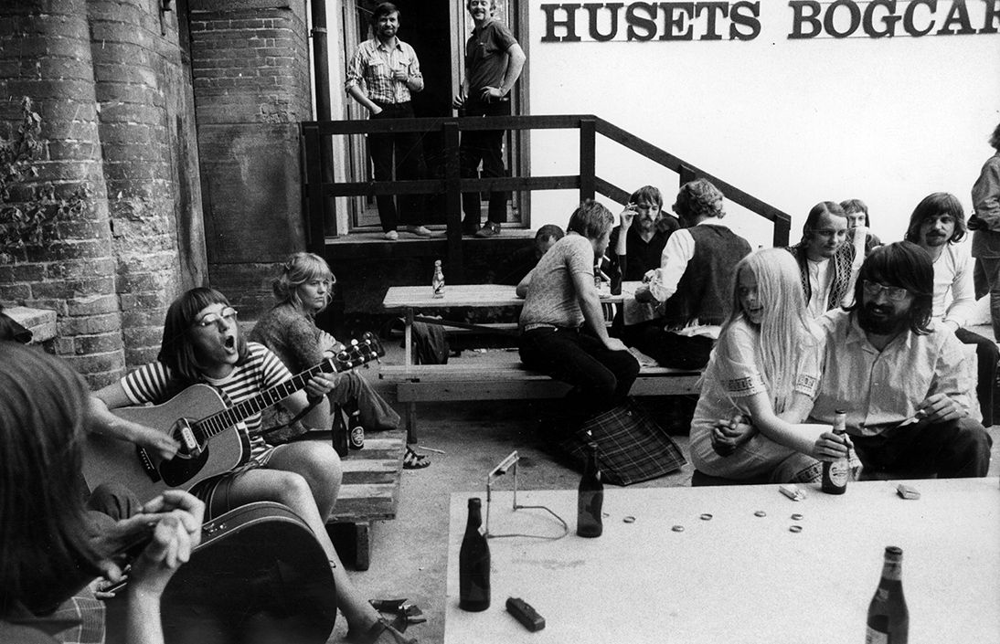

Huset-KBH (det tidligere Huset i Magstræde eller i folkemunde bare Huset) har eksisteret som kulturel og kunstnerisk frirum siden 1970. I løbet af årerne har Huset oparbejdet en lang og spændende historie. Vi har endnu ikke styr på alle fakta og historier, der findes derude. Har du noget at tilføje, noget at rette eller lyst til at dele en historie, så find kontaktinfo nederst på siden.
I 1968 blev idéen til Projekt Hus undfanget af Det Ny Samfund og de politiske grupper Krim, ABCinema, Unge Pædagoger, Individ og Samfund samt Club 27. Året efter blev planerne for kolonialfimaet, Sthyr og Kjærs gamle pakhus offentliggjort: Et fælles værested for alverdens sociale og kulturelle betingelser støttet af Københavns Kommune, Kulturborgmesteren og Folketingets Finansudvalg.
Den 1. april 1970 overdrages huset til ‘de unge’. Efter overdragelsen flytter hippier og flippere ind i bygningen, hvor op mod 700 unge bor på Husets betongulve (Red: Vidste du, at Huset faktisk er det første betonhus i Danmark?).
Musikken larmer op igennem den skrammede opgang, og fællesskabet, solidariteten og stofferne bliver dyrket. Narkotikamisbruget og debatterne kommer til at plage Huset så meget, at stedet allerede bliver lukket året efter. Kommunen beslutter herefter at åbne Københavns Ungdoms Center (KUC) i maj 1972. Ja, faktisk har Huset været lukket og genåbnet omkring tre gange i sin levetid, henholdsvis 1971-72, 1994-97 og igen 2004-05.
Huset blev i disse år også fødested til blandt andet Fristaden Christiania og Thy Lejren. Det siges også, at Blekingegadebanden skulle have afholdt op til flere møder i Huset.
Hør denne podcast om Huseets oprindelse fotalt af Peter Duelund
Huset har altid været et kulturelt og kunstnerisk, mangfoldigt hus. Det har lagt lokaler til mange forskellige unikke oplevelser, events og festivaler igennem årerne.
Huset har altid været et kulturelt og kunstnerisk, mangfoldigt hus. Det har lagt lokaler til mange forskellige unikke oplevelser, events og festivaler igennem årerne.
Lydpol har lavet en podwalk om Husets spændende fortid. Hør historierne om hvordan det hele begyndte her på SoundCloud.
Herunder er et udpluk af diverse events, festivaler og ændringer (listen opdateres løbende):
Projekthus åbner
Husets Bogcafé åbner
Vizehuset åbner
Spisehuset åbner
Biografen åbner
Husets Teater åbner
Vizehuset skifter navn til Musikcaféen
D.A.D debuterer i Musikcaféen
Barbue åbner
Sonic Youth spillede deres første koncert i Danmark i Musikcaféen
Port Salut åbner
Red Hot Chili Peppers spiller koncert
SalonK åbner
Ungdomsinformation og Use It åbner
Radiohead spiller koncert for 20 mennesker på 1.Sal
Husets Teater flytter til Halmtorvet
Plan B åbner
Copenhagen Jazz Festival
Copenhagen Jazz Festival
Copenhagen Jazz Festival
Copenhagen Jazz Festival
Teaterfestivalen Vildskud – Festival for uafhængig teater
Copenhagen Jazz Festival
Teaterfestivalen Vildskud – Festival for uafhængig teater
Huset besat af kultur – en aktionsdag for at bevare Huset
Copenhagen Jazz Festival
Teaterfestivalen Vildskud – Festival for uafhængig teater
Årets Leif
CPH.LITT
Nye Rødder Festival
2nd Society
Re:new
Copenhagen Jazz Festival
Teaterfestivalen Vildskud – Festival for uafhængig teater
Alphabeat optager musikvideo til ‘Fascination’
Copenhagen Jazz Festival
Teaterfestivalen Vildskud – Festival for uafhængig teater
Underkanten åbner
Copenhagen Jazz Festival
Teaterfestivalen Vildskud – Festival for uafhængig teater
Teateret Plan B lukker og Planeten åbner
Copenhagen Jazz Festival
Teaterfestivalen Vildskud – Festival for uafhængig teater
Red Barnet Ungdom starter den ugentlige stand-up klub
The Rumour Said Fire spiller koncert
Copenhagen Jazz Festival
Teaterfestivalen Vildskud – Festival for uafhængig teater
40 års jubilæumsfest i 40 timer
Copenhagen Jazz Festival
Teaterfestivalen Vildskud – Festival for uafhængig teater
The Rocky Horror Picture Show bliver en fast tradition hver måned i Husets Biograf
Copenhagen Jazz Festival
Teaterfestivalen Vildskud – Festival for uafhængig teater
Zulu Comedy Festival
Copenhagen Jazz Festival
Open Air Summer Screenings
Teaterfestivalen Vildskud – Festival for uafhængig teater
Zulu Comedy Festival
Spisehuset Rub og Stub åbner
Dúné spiller akustisk koncert
Copenhagen Jazz Festival
Open Air Summer Screenings
Teaterfestivalen Vildskud – Festival for uafhængig teater
Zulu Comedy Festival
Euro Fan Café – Official fan café during Eurovision Song Contest
Analog Bar åbner
Bastard Caféen åbner
Haut åbner
Lars Ulrich fra Metallica spiller akustisk koncert med sin far i forbindelse med Wundergrund
Barbara Moleko og Poul Krebs spiller akustisk koncert
Copenhagen Jazz Festival
Summer in the City Festival – en tredages festival arrangeret af Husets frivillige
Open Air Summer Screenings
Teaterfestivalen Vildskud – Festival for uafhængig teater
Cph Psych Fest
Zulu Comedy Festival
Langbordsmiddag i Magstræde med Spisehuset Rub og Stub og Gorms i Magstræde
Copenhagen Jazz Festival
Huset Hardcore – en todages festival med fokus på hardcore-genren
Summer in the City Festival – en tredages festival arrangeret af Husets frivillige
Open Air Summer Screenings
Teaterfestivalen Vildskud – Festival for uafhængig teater
Copenhagen Jazz Festival
Klub Tråd – Månedligt arrangement med fokus på hardcore-genren
Summer in the City Festival – en tredages festival arrangeret af Husets frivillige
Open Air Summer Screenings
Teaterfestivalen Vildskud – Festival for uafhængig teater
Bastard Café udivder med Bastard Downstairs i Analog Bars gamle lokaler
House of International Theater flytter ind på Husets fjerde sal, STAGE
Zulu Comedy Festival
Spisehuset Fair
Så kontakt christina@huset-kbh.dk